| Landscape pieces at their four shifts |
The landscape is drawn every pass from pieces: straight runs of identical steps in one of 16 directions (draw_landscape). Each step is drawn by a POP blitter with SP on its graphic, two rows a POP, climbing the screen; its graphic is stored exactly as the blitter writes it -- the bottom row left to right, the row above right to left, and so on up. For each of the four fine-scroll positions, 0, 2, 4 and 6 pixels, a table gives every direction a blitter and a graphic: piece_blitters_shift0 for shift 0, piece_blitters_shift2 for shift 2, piece_blitters_shift4 for shift 4, piece_blitters_shift6 for shift 6, chosen each pass by the scroll (shift_table).
Only nine graphics are stored. A ceiling (directions 7 to 13) has graphics of its own, but a step climbing left is its partner's graphic started one row later and drawn by a blitter that turns every byte round through the bit-reversal table (bit_reverse_table): with the zig-zag order, starting a row later makes every row's bytes arrive the other way round, and reversing each byte finishes the mirror. Each graphic holds three variants of its step, one above the other, and column_varieties walks a fixed jumble of 0, 1 and 2 along a run so that a long flat stretch is not one pattern repeated; the offset of each variant comes from graphic_offsets. The two flat graphics carry four end caps after their variants, drawn at the ends of a run instead of a variant (flat_step_clip).
The shifted copies are made at start-up, by build_shifted_pieces, over bytes that are zeros on the tape: a slope one byte wider than its graphic, its open side filled with the ground's checker (shift_slope_piece); a flat piece rotated rather than shifted, since the ground under it repeats every 24 pixels (shift_flat_piece). So the pictures here are of a game run to its menu in SkoolKit's simulator, after the start-up: each step is drawn by the blitter its table names, with SP on the graphic at the variant's offset and A its pairs of rows, and run to the jump back into after_step_drawn (after_step_drawn) -- one call of what draw_step does for every step. White is a pixel set; the strips are the three variants left to right, then, for the flat pieces, the four end caps.
flat_piece_gfx's copies at flat_piece_shifted, 28 rows of 3 bytes each: the rows the start-up writes, compared with the tape's bytes in the simulator -- shift 2: rows 0 to 11; shift 4: rows 0 to 11; shift 6: rows 0 to 11. Those are the three variants (4 rows each); the 16 rows after them, the four end caps, came on the tape already shifted.
flat_piece_two_gfx's copies at flat_piece_two_shifted, 28 rows of 3 bytes each: the rows the start-up writes, compared with the tape's bytes in the simulator -- shift 2: rows 0 to 11; shift 4: rows 0 to 11; shift 6: rows 0 to 11. Those are the three variants (4 rows each); the 16 rows after them, the four end caps, came on the tape already shifted.
Directions 0 and 7, the flat floor and the flat ceiling: three bytes wide and four rows tall, drawn as two pairs of rows, all by the one blitter at every shift. Each strip is the three variants, then the four end caps, each drawn by the blitter at its offset (flat_step_clip picks a cap's: $24 plus 12 times its number).
| Shift | 0: flat floor | 7: flat ceiling |
|---|---|---|
| 0 (piece_blitters_shift0) | blit_flat_step graphic $E583, in flat_piece_gfx | blit_flat_step graphic $E5D9, in flat_piece_two_gfx |
| 2 (piece_blitters_shift2) | blit_flat_step graphic $EA68 | blit_flat_step graphic $EB64 |
| 4 (piece_blitters_shift4) | blit_flat_step graphic $EABC, in flat_piece_shifted | blit_flat_step graphic $EBB8, in flat_piece_two_shifted |
| 6 (piece_blitters_shift6) | blit_flat_step graphic $EB10, in flat_piece_shifted | blit_flat_step graphic $EC0C, in flat_piece_two_shifted |
A row a direction: what it is, then, at each shift, its step's three variants as its blitter draws them, the blitter, and where its graphic starts -- the variant's offset is added to that. The run and rise are from piece_shapes. Climbing-left directions at a shift use their partner's graphic at the opposite shift (2 for 6), started one row on.
| Direction | Shift 0 (piece_blitters_shift0) | Shift 2 (piece_blitters_shift2) | Shift 4 (piece_blitters_shift4) | Shift 6 (piece_blitters_shift6) |
|---|---|---|---|---|
| 1: a gentle slope climbing right run 16, rise 8 | blit_two graphic $E6A5, in slope_1_gfx | $E4A8, in blit_three graphic $E804 | $E4A8, in blit_three graphic $E861, in slope_1_shifted | $E4A8, in blit_three graphic $E8BE, in slope_1_shifted |
| 2: a 45-degree slope climbing right run 8, rise 8 | blit_one graphic $E64E, in slope_2_gfx | $E4D0, in blit_two graphic $E74A | $E4D0, in blit_two graphic $E788, in slope_2_shifted | $E4D0, in blit_two graphic $E7C6, in slope_2_shifted |
| 3: a steep slope climbing right run 8, rise 16 | blit_one graphic $E716, in slope_3_gfx |  $E4D0, in blit_two graphic $E91E | $E4D0, in blit_two graphic $E98C, in slope_3_shifted | $E4D0, in blit_two graphic $E9FA, in slope_3_shifted |
| 4: a gentle slope climbing left run -16, rise 8 | $E52B, in blit_mirror_three graphic $E6A7, in slope_1_gfx | $E4F2, in blit_mirror_three graphic $E8C1, in slope_1_shifted | $E4F2, in blit_mirror_three graphic $E864, in slope_1_shifted | $E4F2, in blit_mirror_three graphic $E807, in slope_1_shifted |
| 5: a 45-degree slope climbing left run -8, rise 8 | blit_mirror_one graphic $E64F, in slope_2_gfx | blit_mirror_two graphic $E7C8, in slope_2_shifted | blit_mirror_two graphic $E78A, in slope_2_shifted | blit_mirror_two graphic $E74C, in slope_2_shifted |
| 6: a steep slope climbing left run -8, rise 16 | blit_mirror_one graphic $E717, in slope_3_gfx |  blit_mirror_two graphic $E9FC, in slope_3_shifted |  blit_mirror_two graphic $E98E, in slope_3_shifted |  blit_mirror_two graphic $E920, in slope_3_shifted |
| 8: a gentle slope climbing right, as a ceiling run 16, rise 8 | blit_two graphic $E66C, in slope_8_gfx | $E4A8, in blit_three graphic $EE9A | $E4A8, in blit_three graphic $EEF7, in slope_8_shifted | $E4A8, in blit_three graphic $EF54, in slope_8_shifted |
| 9: a 45-degree slope climbing right, as a ceiling run 8, rise 8 | blit_one graphic $E630, in slope_9_gfx | $E4D0, in blit_two graphic $EDE0 | $E4D0, in blit_two graphic $EE1E, in slope_9_shifted | $E4D0, in blit_two graphic $EE5C, in slope_9_shifted |
| 10: a steep slope climbing right, as a ceiling run 8, rise 16 | blit_one graphic $E6E0, in slope_10_gfx |  $E4D0, in blit_two graphic $EFB1 | $E4D0, in blit_two graphic $F01F, in slope_10_shifted | $E4D0, in blit_two graphic $F08D, in slope_10_shifted |
| 11: a gentle slope climbing left, as a ceiling run -16, rise 8 | $E52B, in blit_mirror_three graphic $E66E, in slope_8_gfx | $E4F2, in blit_mirror_three graphic $EF57, in slope_8_shifted | $E4F2, in blit_mirror_three graphic $EEFA, in slope_8_shifted | $E4F2, in blit_mirror_three graphic $EE9D, in slope_8_shifted |
| 12: a 45-degree slope climbing left, as a ceiling run -8, rise 8 | blit_mirror_one graphic $E631, in slope_9_gfx | blit_mirror_two graphic $EE5E, in slope_9_shifted | blit_mirror_two graphic $EE20, in slope_9_shifted | blit_mirror_two graphic $EDE2, in slope_9_shifted |
| 13: a steep slope climbing left, as a ceiling run -8, rise 16 | blit_mirror_one graphic $E6E1, in slope_10_gfx | blit_mirror_two graphic $F08F, in slope_10_shifted | blit_mirror_two graphic $F021, in slope_10_shifted | blit_mirror_two graphic $EFB3, in slope_10_shifted |
| 14: a wall, stepping right run 0, rise 16 | $E48C, in blit_one graphic $EC63, in wall_gfx |  $E4D1, in blit_two graphic $EC96 |  $E4D1, in blit_two graphic $ED04, in wall_shifted | $E4D1, in blit_two graphic $ED72, in wall_shifted |
| 15: a wall, stepping left run 0, rise 16 |  $E55C, in blit_mirror_one graphic $EC64, in wall_gfx |  $E52D, in blit_mirror_two graphic $ED74, in wall_shifted |  $E52D, in blit_mirror_two graphic $ED06, in wall_shifted |  $E52D, in blit_mirror_two graphic $EC98, in wall_shifted |